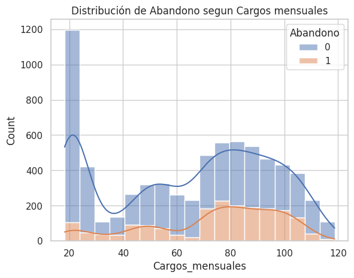
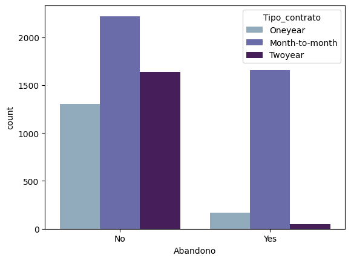
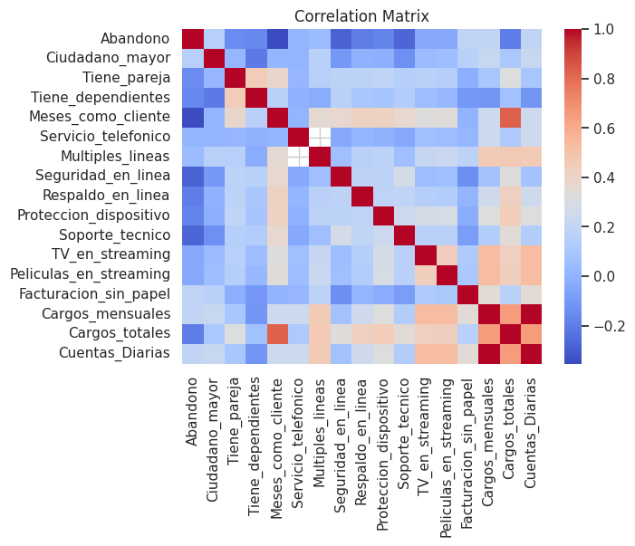

Ver en GitHub
Ver en GitHub
Analisis de Abandono
El proyecto aborda el problema del abandono de clientes en el sector de telecomunicaciones, un desafío crítico que impacta directamente en la rentabilidad y sostenibilidad de las empresas. A través de técnicas de ciencia de datos y aprendizaje automático, se busca identificar patrones de comportamiento y variables clave que influyen en la decisión de los clientes de cancelar sus servicios.
El objetivo final es construir un modelo predictivo confiable que permita anticipar la evasión y diseñar estrategias de retención más efectivas. Ve más detalles del Modelo Predictivo aquí.
Características
Análisis Exploratorio y Visualizaciones
🔹 Distribución de Abandono (Churn) Aproximadamente 26% de los clientes abandonaron. El abandono se concentra en clientes con contratos mensuales y facturación electrónica.🔹 Cargos Mensuales (Charges.Monthly) Clientes con cargos bajos (~20-40 MXN) tienden a permanecer. Clientes con cargos altos (>100 MXN) muestran mayor abandono. Gráfico KDE muestra densidades diferenciadas entre clientes que abandonan y los que no. 
🔹 Tipo de Contrato (Contract) Contratos mensuales tienen la mayor tasa de abandono. Contratos anuales o bianuales presentan mayor fidelización. 
🔹 Método de Pago (PaymentMethod) Métodos como transferencia electrónica y tarjeta de crédito tienen menor abandono. Pago por cheque muestra mayor abandono, posiblemente por menor digitalización.
🔹 Servicios Adicionales Clientes con seguridad en línea, respaldo, soporte técnico y streaming tienden a permanecer más tiempo. La falta de estos servicios correlaciona con mayor abandono.
🔹 Tenencia (tenure) Clientes con menos de 12 meses tienen mayor probabilidad de abandonar. La tenencia es uno de los predictores más fuertes del churn. 
Este proyecto no solo se analiza datos, sino que los convierte en insumos prácticos para tomar decisiones de negocio, mostrando cómo la ciencia de datos puede impactar directamente en la satisfacción y fidelización de cliente
Tecnologías
| Python | Pandas |
| Matplotlib | Seaborn |
Visión general
El proyecto se centra en predecir el abandono de clientes en telecomunicaciones mediante modelos de machine learning, transformando datos en predicciones confiables que apoyan estrategias de retención y mejoran la rentabilidad empresarial.
Resultados Obtenidos
Se detectaron factores clave que influyen en la decisión de los clientes:
El análisis permitió construir una visión clara del perfil de clientes en riesgo, lo que abre la puerta a estrategias de retención más efectivas.
Más allá de números, el valor está en que la empresa puede anticipar tendencias de abandono y actuar a tiempo con mejoras en precios, servicios y comunicación.